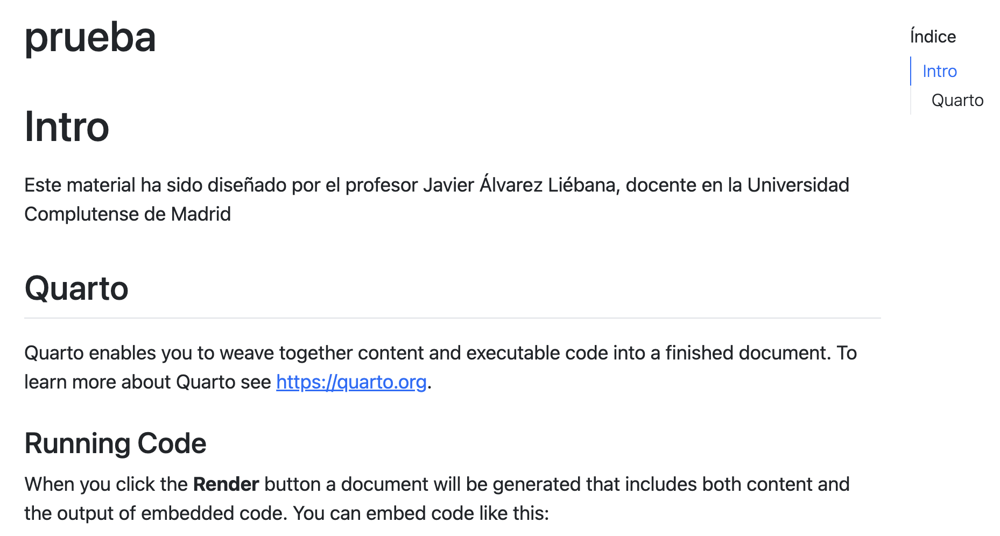
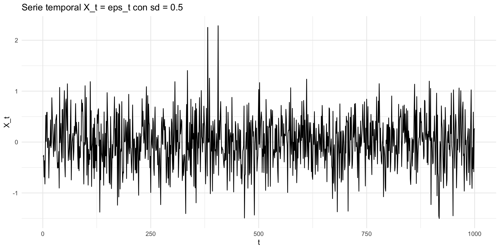
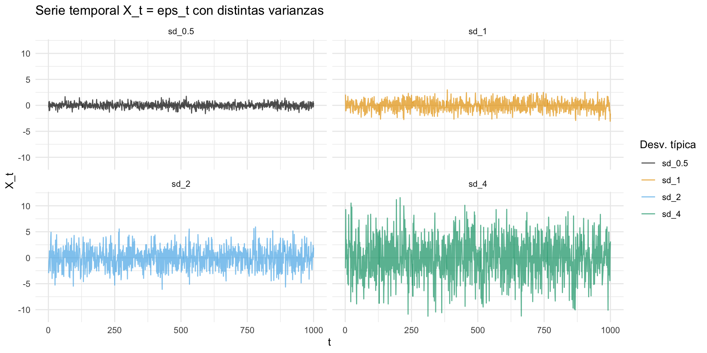
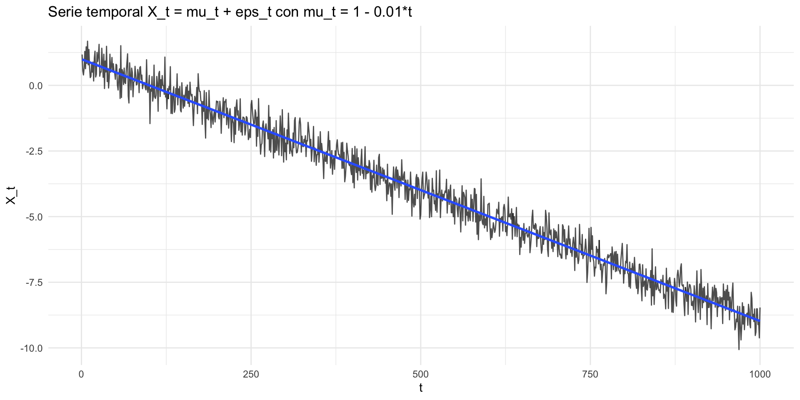
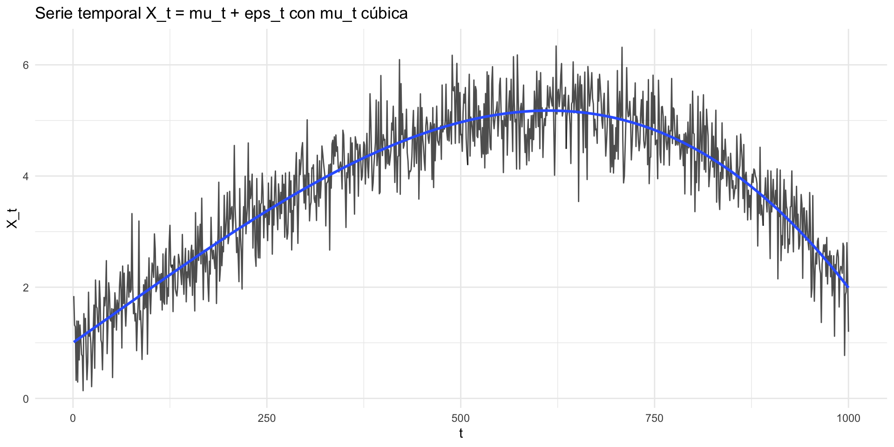
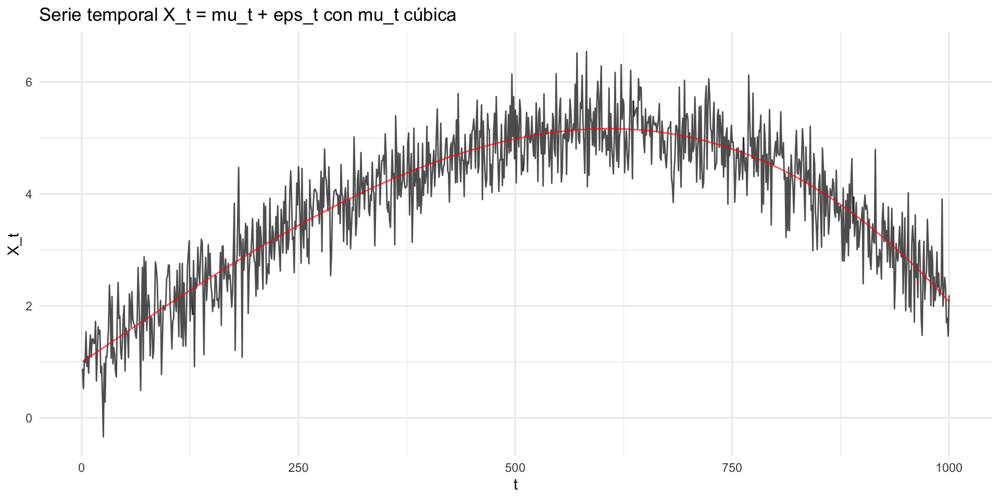
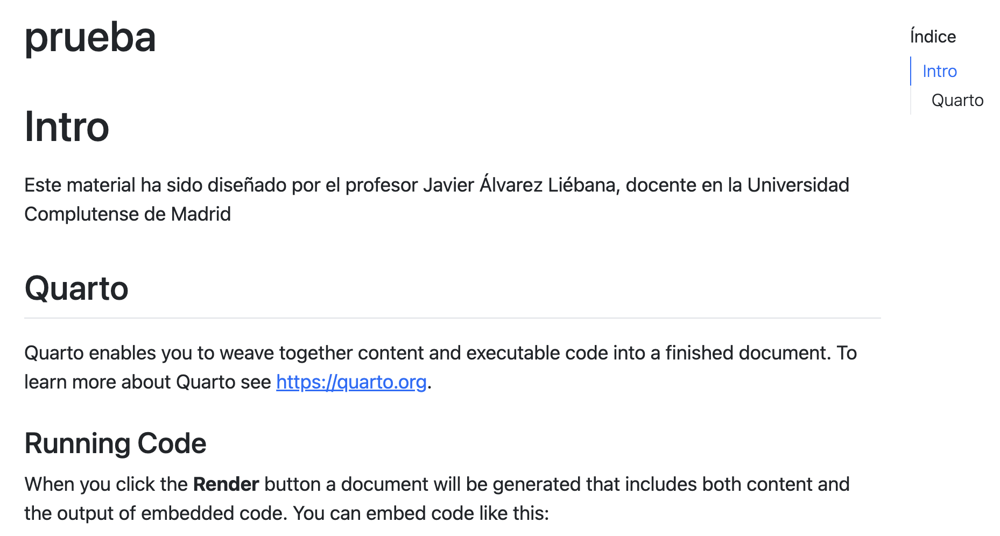
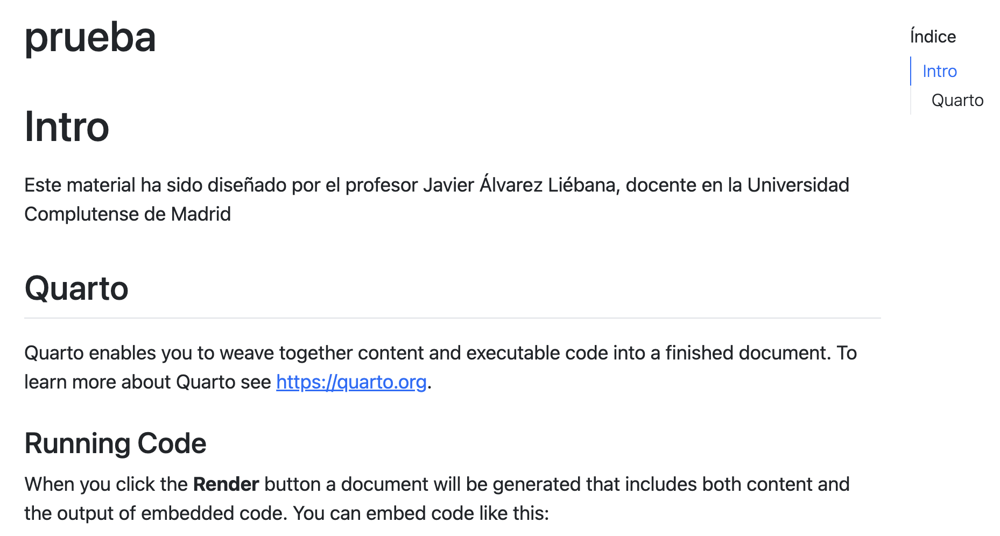

Licenciado en Matemáticas (UCM). Doctorado en estadística (UGR).
Encargado de la visualización y análisis de datos covid del Principado de Asturias (2021-2022).
Miembro de la Sociedad Española de Estadística e IO y la Real Sociedad Matemática Española.
Actualmente, investigador y docente en la Facultad de Estadística de la UCM. Divulgando por Twitter e Instagram
Objetivos
Entender el concepto de serie temporal y sus diferencias con la regresión → lo que te equivocaste ayer influye en lo que te equivocarás hoy
Entender conceptos teóricos básicos de procesos estocásticos
Aprender a manejar paquetes estadísticos de R de series temporales → la aplicabilidad de la teoría será tu valor en el futuro
Introducirnos en la metodología Box-Jenkins → los datos deben ser estacionarios
Evaluación
Evaluación continua: 3 entregas individuales a ordenador en clase (20%-25%-35%), y una entrega individual teórica a papel en clase (20%). Asistencia no obligatoria pero se valorará positivamente la participación.
Examen final: la nota ponderará en función de tu evaluación continua.
Más de un 7 -> podrás decidir peso del final entre un 0% y un 100% de la nota (es decir, no será obligatorio el final).
Entre 6 y 7 -> podrás decidir peso del final entre un 35% y un 100%.
Entre 5 y 6 -> podrás decidir peso del final entre un 60% y un 100%.
Entre 3.5 y 5 -> podrás decidir peso del final entre un 80% y un 100%.
Por debajo del 3.5 -> el peso del final será del 100%
Si tienes que hacer el examen final, será obligatorio presentarse y sacar más de un 3 para aprobar.
Planificación entregas
Entrega I (20%): 8 de octubre (120 minutos).
Entrega II (25%): … (120 minutos).
Entrega III (35%): … (120 minutos).
Entrega teórica (20%): … (120 minutos).
Examen final: 14 de enero (10:00-13:30)
Se podrán modificar las fechas por saturación con otras asignaturas siempre y cuando el/la delegado/a lo solicite con más de 7 días de antelación.
Diapositivas: diapositivas en Quarto disponibles y actualizadas en https://javieralvarezliebana.es/docencia/time-series. En el menú de las diapositivas (abajo a la izquierda) tienes una opción para descargarlas en pdf en Tools
airquality del paquete {datasets} (ya instalado por defecto): medidas diarias (153 observaciones) de la calidad del aire en Nueva York, de mayo a septiembre de 1973. Se midieron 6 variables: ozono, radiación solar, viento, temperatura, mes y día.
Durante la carrera es probable que hayas tratado con multitud de datos pero hay uno muy especial que trataremos en esta asignatura de manera diferente: las series temporales.
Vamos a cargar el fichero retiro_temp.csv donde tenemos los datos de temperaturas diarios (AEMET) desde 1980 hasta 2024 de la estación instalada en El Retiro (Madrid).
Código
library(readr) # de tidyverse# en tidyverse, read_ en lugar de read.# tendremos datos en formato tibble en lugar de data.frameretiro <-read_csv(file ="./datos/retiro_temp.csv")retiro
# A tibble: 16,314 × 8
fecha id_station nombre provincia altitud tmed tmin tmax
<date> <dbl> <chr> <chr> <dbl> <dbl> <dbl> <dbl>
1 2000-01-01 3195 MADRID, RETIRO MADRID 667 5.4 0.3 10.4
2 2000-01-02 3195 MADRID, RETIRO MADRID 667 5 0.3 9.6
3 2000-01-03 3195 MADRID, RETIRO MADRID 667 3.5 0.1 6.9
4 2000-01-04 3195 MADRID, RETIRO MADRID 667 4.3 1.4 7.2
5 2000-01-05 3195 MADRID, RETIRO MADRID 667 0.6 -0.4 1.6
6 2000-01-06 3195 MADRID, RETIRO MADRID 667 3.8 -1.1 8.8
7 2000-01-07 3195 MADRID, RETIRO MADRID 667 6.2 0.6 11.7
8 2000-01-08 3195 MADRID, RETIRO MADRID 667 5.4 -0.1 11
9 2000-01-09 3195 MADRID, RETIRO MADRID 667 5.5 3 8
10 2000-01-10 3195 MADRID, RETIRO MADRID 667 4.8 1.8 7.8
# ℹ 16,304 more rows
Podemos por ejemplo visualizar un boxplot de las temperaturas medias de cada día durante estos últimos 44 años…
Código
library(tidyverse)ggplot(retiro) +geom_boxplot(aes(y = tmed)) +scale_y_continuous(labels = scales::label_number(suffix ="ºC")) +theme_minimal() +labs(title ="Temperatura desde 1980 hasta 2024",x ="Cuatrimestre", y ="Temperatura media diaria")
ggplot(retiro) +geom_line(aes(x = fecha, y = tmed), linewidth =0.3, alpha =0.7) +theme_minimal() +labs(title ="Temperatura media como SERIE TEMPORAL",x ="t (fecha)", y ="ºC (media)")
ggplot(retiro) +geom_line(aes(x = fecha, y = tmed), linewidth =0.3, alpha =0.7) +theme_minimal() +labs(title ="Temperatura media como SERIE TEMPORAL",x ="t (fecha)", y ="ºC (media)")
Tendencia: lo que ajustarías con un modelo clásico (por ejemplo, una regresión lineal) y representa el comportamiento global de la serie, algo así como un nivel base respecto al que la serie oscila.
(en nuestro caso: la temperatura global aumenta con el paso de los años)
Código
ggplot(retiro, aes(x = fecha, y = tmed)) +geom_line(linewidth =0.3, alpha =0.7) +geom_smooth(method ="lm", se =FALSE) +theme_minimal() +labs(title ="Temperatura media como SERIE TEMPORAL",x ="t (fecha)", y ="ºC (media)")
Estacionalidad: al margen de esa tendencia general, si hacemos zoom, en muchas series podemos observar un patrón que se repite cada x unidades temporales. En el caso de la temperatura, hay un patrón anual: diciembre hace más frío que en agosto.
Código
ggplot(retiro |>filter(between(fecha, as_date("2020-01-01"), as_date("2023-12-31"))),aes(x = fecha, y = tmed)) +geom_line(linewidth =0.3, alpha =0.7) +geom_smooth(method ="loess") +theme_minimal() +labs(title ="Temperatura media diaria de 2020 a 2023",x ="t (fecha)", y ="ºC (media)")
Atípicos: como sucede siempre en estadística será importantísimo analizar y tratar los datos atípicos muy alejados de lo esperado. Por ejemplo, en nuestro caso, Filomena.
Código
ggplot(retiro |>filter(between(fecha, as_date("2020-01-01"), as_date("2023-12-31"))) |>mutate(filomena =between(fecha, as_date("2020-12-25"), as_date("2021-01-22"))),aes(x = fecha, y = tmed)) +geom_line(linewidth =0.3, alpha =0.7) +geom_point(aes(alpha = filomena), color ="#991545") +scale_alpha_manual(values =c(0, 1)) +guides(alpha ="none") +theme_minimal() +labs(title ="Temperatura media diaria de 2020 a 2023",x ="t (fecha)", y ="ºC (media)")
Intervenciones: incluso podría suceder que la serie tuviese un corte o salto en su comportamiento. Por ejemplo, imagina que de repente el aparato de medición empieza a medir +25 grados de la temperatura real.
Código
ggplot(retiro |>filter(between(fecha, as_date("2020-01-01"), as_date("2023-12-31"))) |>mutate(tmed =if_else(fecha <="2021-12-31", tmed, tmed +25))) +geom_line(aes(x = fecha, y = tmed), linewidth =0.3, alpha =0.7) +guides(alpha ="none") +theme_minimal() +labs(title ="Temperatura media diaria de 2020 a 2023",subtitle ="Error de +25ºC a partir de 2022",x ="t (fecha)", y ="ºC (media)")
Ejemplos de series
En esta asignatura será fundamental un concepto: estacionariedad. Diremos que una serie es estacionaria si oscila de manera estable con una media y varianza constante.
Distintos objetivos
Análisis descriptivo
Visualización: ¿cómo son los datos? ¿Existe algún ausente o valor atípico?
¿Se puede descomponer la serie en series más sencillas?
Análisis probabilístico:
¿Existe un modelo teórico tal que lo que observamos sea simplemente una muestra dicho modelo probabilístico?
Aunque los datos sean aleatorios, ¿podemos modelizar de manera teórica alguna de sus característica?
Predicción
Conociendo su comportamiento pasado, ¿cuánto valdrá su valor mañana?
¿Cuánto me estoy equivocando? ¿Cómo medir ese error?
Bloques del curso
Bloque I: analisis exploratorio. Descomposición y suavizado
Siempre que tengas que descargar algo de CRAN (ya sea el propio R o un paquete), asegúrate de tener conexión a internet.
Instalación de R Studio
RStudio será el Word que usaremos para escribir (lo que se conoce como un IDE: entorno integrado de desarrollo).
Paso 1: entra la web oficial de RStudio (ahora llamado Posit) y selecciona la descarga gratuita.
Paso 2: selecciona el ejecutable que te aparezca acorde a tu sistema operativo.
Paso 3: tras descargar el ejecutable, hay que abrirlo como otro cualquier otro y dejar que termine la instalación.
Scripts (documentos .R)
Un script será el documento en el que programamos, nuestro archivo .doc (aquí con extensión .R) donde escribiremos las órdenes. Para abrir nuestro primero script, haz click en el menú en File < New File < R Script.
Cuidado
Es importante no abusar de la consola: todo lo que no escribas en un script, cuando cierres, lo habrás perdido.
Cuidado
R es case-sensitive: es sensible a mayúsculas y minúsculas por lo que x y X representa variables distintas.
Ejecutando el primer script
Ahora tenemos una cuarta ventana: la ventana donde escribiremos nuestros códigos. ¿Cómo ejecutarlo?
Escribimos el código a ejecutar.
Guardamos el archivo .R haciendo click en Save current document.
El código no se ejecuta salvo que se lo indiquemos. Tenemos tres opciones de ejecutar un script:
Copiar y pegar en consola.
Seleccionar líneas y Ctrl+Enter
Activar Source on save a la derecha de guardar: no solo guarda sino que ejecuta el código completo.
De la misma manera que en el ordenador solemos trabajar de manera ordenada por carpetas, en RStudio podemos hacer lo mismo para trabajar de manera eficaz creando proyectos.
Un proyecto será una «carpeta» dentro de RStudio, de manera que nuestro directorio raíz automáticamente será la propia carpeta de proyecto (pudiendo pasar de un proyecto a otro con el menu superior derecho).
Podemos crear uno en una carpeta nueva o en una carpeta ya existente.
Buenas prácticas
Tip 1: asignar, evaluar y comparar no es lo mismo. Si te has fijado en R estamos usando <- para asignar valores a variables. Usaremos = para evaluar argumentos en funciones y == para saber si dos elementos son iguales.
x <-1# asignarx =1# evaluarx ==1# comparar
Tip 2: programa como escribes. Al igual que cuando redactas en castellano, acostúmbrate a incorporar espacios y saltos de línea paranoquedarteciego (es una buena práctica y no un requisito porque R no procesa los espacios)
x <-1# óptimox<-1# regux<-1# peor (decídete)
Buenas prácticas
Tip 3: no seas caótico, estandariza nombres, acostúmbrate siempre a hacerlo igual. El único requisito es que debe empezar siempre por una letra (y sin tildes). La forma más recomendable es la conocida como snake_case
Tip 4: facilita la lectura y escritura, pon márgenes. En Tools < Global Options puedes personalizar algunas opciones de RStudio. En Code < Display podemos indicarle en Show margin (no interacciona con el código).
Buenas prácticas
Tip 5: el tabulador es tu mejor amigo. En RStudio tenemos una herramienta maravillosa: si escribes parte del nombre de una variable o función y tabulas, RStudio te autocompleta
Tip 7: fíjate en el lateral izquierdo. No solo podrás ver la línea de código por la que vas sino que, en caso de estar cometiendo un error de sintaxis, el propio RStudio te avisará.
Tip 8: intenta trabajar siempre por proyectos (para esta clase, crea un script clase2.R en el proyecto que creamos en la anterior clase)
¿Existen variables más allá de los números en la ciencia de datos? Piensa por ejemplo en los datos que podrías guardar de una persona:
La edad o el peso será un número.
edad <-33
Su nombre será una cadena de texto (conocida como string o char).
nombre <-"javi"
A la pregunta «¿estás matriculado en la Facultad?» la respuesta será lo que llamamos una variable lógica (TRUE si está matriculado o FALSE en otro caso).
matriculado <-TRUE
Su fecha de nacimiento será precisamente eso, una fecha, un tipo de variable crucial en esta asignatura
Variables de fecha
Un tipo de datos muy especial: los datos de tipo fecha.
Error in fecha_char + 1: non-numeric argument to binary operator
Las fechas NO pueden ser texto: debemos convertir la cadena de texto a fecha.
Para trabajar con fechas usaremos el paquete {lubridate}, que deberemos instalar antes de poder usarlo.
install.packages("lubridate")
Variables de fecha
Una vez instalado, de todos los paquetes (libros) que tenemos, le indicaremos que nos cargue ese concretamente.
library(lubridate) # instala si no lo has hecho
Para convertir a tipo fecha usaremos la función as_date() del paquete {lubridate} (por defecto en formato yyyy-mm-dd)
# ¡no es una fecha, es un texto!fecha_char +1
Error in fecha_char + 1: non-numeric argument to binary operator
class(fecha_char)
[1] "character"
fecha <-as_date("2023-03-28")fecha +1
[1] "2023-03-29"
class(fecha)
[1] "Date"
Variables de fecha
En as_date() el formato de fecha por defecto es yyyy-mm-dd así si la cadena de texto no se introduce de manera adecuada…
as_date("28-03-2023")
[1] NA
Para cualquier otro formato debemos especificarlo en el argumento opcional format = ... tal que %d representa días, %m meses, %Y en formato de 4 años y %y en formato de 2 años.
as_date("28-03-2023", format ="%d-%m-%Y")
[1] "2023-03-28"
as_date("28-03-23", format ="%d-%m-%y")
[1] "2023-03-28"
as_date("03-28-2023", format ="%m-%d-%Y")
[1] "2023-03-28"
as_date("28/03/2023", format ="%d/%m/%Y")
[1] "2023-03-28"
Variables de fecha
En dicho paquete tenemos funciones muy útiles para manejar fechas:
Con today() podemos obtener directamente la fecha actual.
today()
[1] "2024-10-06"
Con now() podemos obtener la fecha y hora actual
now()
[1] "2024-10-06 12:08:05 CEST"
Con year(), month() o day() podemos extraer el año, mes y día
fecha <-today()year(fecha)
[1] 2024
month(fecha)
[1] 10
Resúmenes de paquetes
Amplia contenido
Tienes un resumen en pdf de los paquetes más importantes en la carpeta correspondiente en el campus
Vectores: concatenar
Cuando trabajamos con datos normalmente tendremos columnas que representan variables: llamaremos vectores a una concatenación de celdas (valores) del mismo tipo (lo que sería una columna de una tabla).
Un número individual x <- 1 (o bien x <- c(1)) es en realidad un vector de longitud uno –> todo lo que sepamos hacer con un número podemos hacerlo con un vector de ellos.
üíª Tu turno
Intenta realizar los siguientes ejercicios sin mirar las soluciones
üìù Define el vector x como la concatenaci√≥n de los 5 primeros números impares. Calcula la longitud del vector
Código
# Dos formasx <-c(1, 3, 5, 7, 9)x <-seq(1, 9, by =2)length(x)
üìù Accede al tercer elemento de x. Accede al último elemento (sin importar la longitud, un c√≥digo que pueda ejecutarse siempre). Elimina el primer elemento.
üìù Encuentra del vector x de ejercicios anteriores los elementos mayores (estrictos) que 1 Y ADEM√ÅS menores (estrictos) que 7. Encuentra una forma de averiguar si todos los elementos son o no positivos.
üìù Dado el vector x del ejercicio anterior, ¿cuales tienen un dato ausente? Pista: las funciones is.algo() comprueban si el elemento es tipo algo (tabula)
Código
is.na(x)
üìù Define el vector x como la concatenaci√≥n de los 4 primeros números pares. Calcula el número de elementos de x menores estrictamente que 5.
üìù Encuentra del vector x los elementos mayores (estrictos) que 1 y menores (estrictos) que 6. Encuentra una forma de averiguar si todos los elementos son o no negativos.
Código
x[x >1& x <7]all(x >0)
Primera base de datos
Cuando analizamos datos solemos tener varias variables de cada individuo: necesitamos una «tabla» que las recopile. La opción más inmediata son las matrices: concatenación de variables del mismo tipo e igual longitud.
Imagina que tenemos estaturas y pesos de 4 personas. ¿Cómo crear un dataset con las dos variables?
La opción más habitual es usando cbind(): concatenamos (bind) vectores en forma de columnas (c)
Podemos comprobar las dimensiones con dim(), nrow() y ncol(): las matrices son un tipo de datos tabulados (organizados en filas y columnas)
dim(datos_matriz)
[1] 4 2
nrow(datos_matriz)
[1] 4
ncol(datos_matriz)
[1] 2
Segundo intento: data.frame
Las matrices tienen el mismo problema que los vectores: si juntamos datos de distinto tipo, se perturba la integridad del dato ya que los convierte (fíjate en el código inferior: las edades y los TRUE/FALSE los ha convertido a texto)
Error in matriz + 1: non-numeric argument to binary operator
Segundo intento: data.frame
Para poder trabajar con variables de distinto tipo tenemos en R lo que se conoce como data.frame: concatenación de variables de igual longitud pero que pueden ser de tipo distinto.
tabla <-data.frame(edades, soltero, nombres)class(tabla)
[1] "data.frame"
tabla
edades soltero nombres
1 14 TRUE javi
2 24 NA laura
3 NA FALSE lucía
Segundo intento: data.frame
Dado que un data.frame es ya un intento de «base de datos» las variables no son meros vectores matemáticos: tienen un significado y podemos (debemos) ponerles nombres que describan su significado
edad estado nombre f_nacimiento
1 14 TRUE javi 1989-09-10
2 24 NA laura 1992-04-01
3 NA FALSE lucía 1980-11-27
Intento final: tibble
Las tablas en formato data.frame tienen algunas limitaciones. La principal es que no permite la recursividad: imagina que definimos una base de datos con estaturas y pesos, y queremos una tercera variable con el IMC
üìù Filtra solo los datos de la quinta observaci√≥n
Código
airquality_tb[Month ==8, ]
üìù Filtra solo los datos del mes de agosto. ¿C√≥mo indicarle que queremos solo las filas que cumplan una condici√≥n concreta? (pista: en realidad todo son vectores ‚Äúformateados‚Äù)
Código
airquality_tb[Month ==8, ]
üìù Selecciona aquellos datos que no sean ni de julio ni de agosto.
Del paquete {Biostatistics} usaremos el conunto de datos pinniped, que guarda los datos de peso de cuerpo y cerebro (desagregado por sexo y mono/poligamia) de 33 especies de mamíferos marinos.
Intenta responder a las preguntas planteadas en el workbook
Comunicar: rmd y Quarto
Una de las principales fortalezas de R es la facilidad para generar informes, libros, webs, apuntes y hasta diapositivas (este mismo material por ejemplo). Para ello instalaremos antes
el paquete {rmarkdown} (para generar archivos .rmd)
install.packages("rmarkdown")
instalar Quarto (si ya conocías R, el «nuevo» .rmd ahora como .qmd)
Comunicar: rmd y Quarto
Hasta ahora solo hemos programado en scripts (archivos .R) dentro de proyectos, pero en muchas ocasiones no trabajaremos solos y necesitaremos comunicar los resultados en diferentes formatos:
Los archivos de extensión .qmd (o .rmd antes) nos permitirán fácilmente combinar:
Markdown: lenguaje tipado que nos permite crear contenido simple (tipo wordpress, con texto, negritas, cursivas, etc) con un diseño legible.
Matemáticas (latex): lenguaje para escribir notación matemática como \(x^2\) o \(\sqrt{y}\) o \(\int_{a}^{b} f(x) dx\)
Código y salidas: podremos no solo mostrar el paso final sino el código que has ido realizando (en R, Python, C++, Julia, …), con cajitas de código llamadas CHUNKS.
Imágenes, gráficas, tablas, estilos (css, js), etc.
Comunicar: rmd y Quarto
La principal ventaja de realizar este tipo de material en Quarto/Rmarkdown es que, al hacerlo desde RStudio, puedes generar un informe o una presentación sin salirte del entorno de programación en el que estás trabajando
De esta forma podrás analizar los datos, resumirlos y a la vez comunicarlos con la misma herramienta.
Vamos a crear el primer fichero rmarkdown con Quarto con extensión .qmd. Para ello solo necesitaremos hacer click en
File << New File << Quarto Document
Nuestro primer informe
Tras hacerlo nos aparecerán varias opciones de formatos de salida:
archivo .pdf
archivo .html (recomendable): documento dinámico, permite la interacción con el usuario, como una «página web».
archivo .doc (nada recomendable)
De momento dejaremos marcado el formato HTML que viene por defecto, y escribiremos el título de nuestro documento. Tras ello tendremos nuestro archivo .qmd (ya no es un script .R como los que hemos abierto hasta ahora).
Nuestro primer informe
Deberías tener algo similar a la captura de la imagen con dos modos de edición: Source (con código, la opción recomendada hasta que lo domines) y Visual (más parecido a un blog)
Para ejecutar TODO el documento debes clickar Render on Save y darle a guardar.
Salida de Quarto
Deberías haber obtenido una salida en html similar a esta (y se te ha generado en tu ordenador un archivo html)
Editor: source vs visual
Como se indicaba, tienes dos formas de trabajar: con código puro y algo parecido a un Notion (blog)
Además al Running Code le añadiremos una almohadilla #: las almohadillas FUERA DE CHUNKS nos servirán para crear epígrafes (secciones) en el documento
Índice de un qmd

Para que el índice capture dichas secciones modificaremos la cabecera del archivo como se observa en la imagen (puedes cambiar la localización del índice y el título si quieres para probar).
Texto en un qmd
Vamos a personalizar un poco el texto haciendo lo siguiente:
Vamos a añadir negrita al nombre (poniendo ** al inicio y al final).
Vamos añadir cursiva a la palabra material (poniendo _ al inicio y al final).
Para añadir código R debemos crear nuestras cajas de código llamadas chunks: altos en el camino en nuestro texto markdown donde podremos incluir código de casi cualquier lenguaje (y sus salidas).
Para incluir uno deberá de ir encabezado de la siguiente forma tienes un atajo Command + Option + I (Mac) o Ctrl + Shift + I (Windows)
Código en un qmd
Dentro de dicha cajita (que tiene ahora otro color en el documento) escribiremos código R como lo veníamos haciendo hasta ahora en los scripts.
Vamos por ejemplo a definir dos variables y su suma de la siguiente manera, escribiendo dicho código en nuestro .qmd (dentro de ese chunk)
# Código Rx <-1y <-2x + y
[1] 3
Etiquetando chunks
Los chunks pueden tener un nombre o etiqueta, de forma que podamos referenciarlos de nuevo para no repetir código.
Ejecutando chunks
En cada chunk aparecen dos botones:
botón de play: activa la ejecución y salida de ese chunk particular (lo puedes visualizar dentro de tu propio RStudio)
Además podemos incluir código R dentro de la línea de texto (en lugar de mostrar el texto x ejecuta el código R mostrando la variable).
Personalización de chunks
Los chunks podemos personalizarlos con opciones al inicio del chunk precedido de #|:
#| echo: false: ejecuta código y se muestra resultado pero no visualiza código en la salida.
#| include: false: ejecuta código pero no muestra resultado y no visualiza código en la salida.
#| eval: false: no ejecuta código, no muestra resultado pero sí visualiza código en la salida.
#| message: false: ejecuta código pero no muestra mensajes de salida.
#| warning: false: ejecuta código pero no muestra mensajes de warning.
#| error: true: ejecuta código y permite que haya errores mostrando el mensaje de error en la salida.
Estas opciones podemos aplicarlas chunk a chunk o fijar los parámetros de forma global con knitr::opts_chunk$set() al inicio del documento (dentro de un chunk).
Personalizando chunks
Si queremos que aplique la opción a todos los chunks por defecto debemos incluirlo al final de la cabecera, como opciones de ejecución
Además de texto y código podemos introducir lo siguiente:
Ecuaciones: puedes añadir además ecuaciones como \(x^2\) (he escrito $x^2$, la ecuación entre dólares).
Listas: puedes itemizar elementos poniendo *
* Paso 1: ...
* Paso 2: ...
Cross-references: puedes etiquetar partes del documento (la etiqueta se construye con {#nombre-seccion}) y llamarlas luego con [Sección](@nombre-seccion)
Fíjate que el caption está en el margen (por ejemplo). Puedes cambiarlo introduciendo ajustes en la cabecera (todo lo relativo a figuras empieza por fig-, y puedes ver las opciones tabulando). Tienes más información en https://quarto.org/
... y esta [verde y en negrita]{style="color:green; font-weight: bold;"}
Esta palabra es roja …
… y esta verde y en negrita
Revealjs
Puedes añadir algunas «animaciones» usando lo que se conoce como Revealjs (javascript), especifcándolo en la cabecera y usando bloques de dicho lenguaje delimitados por ::: al inicio y final, y la palabra de la «herramienta» a usar. Por ejemplo {.incremental} hace una transición de los elementos.
# install.packages("reticulate")library(reticulate)install_python("3.9.12") # Instalar python en PC sino lo tienes# Instalar paquetes de Pythonreticulate::py_install("numpy")reticulate::py_install("matplotlib")
Crea un documento .qmd con nombre, título, formato e índice. Cada ejercicio posterior será una subsección del documento. Ejecuta los chunks que consideres y comenta las salidas para responder a cada pregunta
Ejercicio 1. ¿Cuántos personajes hay guardados en la base de datos? ¿Cuántas características se han medido de cada uno?
Ejercicio 4. Busca ayuda de la función unique(). Úsala para saber que modalidades tiene la variable cualitativa correspondiente al color de ojos. ¿Cuántos distintos hay?
Ejercicio 5. ¿Existe ALGÚN valor ausente en la variable de color ojos?
Ejercicio 6. Calcula la media y desviación típica de las variables de estatura y peso (cuidado con los ausentes). Define un nuevo tibble con esas dos variables e incorpora una tercera variable que se llame “IMC” que calcule el índice de masa corporal. Incorpora con $ $ la fórmula usada para el IMC.
Estructuras de control
Una estructura de control se compone de una serie de comandos orientados a decidir el camino que tu código debe recorrer
¿Cómo puedo repetir una misma expresión (dependiendo de una variable)?
Si has programado antes, quizás te sea familiar las conocidas como estructuras condicionales tales como if (blabla) {...} else {...} o buclesfor/while (a evitar siempre que podamos).
Estructura If
Una de las estructuras de control más famosas son las conocidas como estructuras condicionalesif.
SI (IF) un conjunto de condiciones se cumple (TRUE), entonces ejecuta lo que haya dentro de las llaves
Por ejemplo, if (x == 1) { código A } else { código B } ejecutará A si x es igual a 1 y B en cualquier otro caso.
if (all(edad >=18)) { print("Todos son mayores de edad")} else {print("Existe alguna persona menor de edad")}
[1] "Existe alguna persona menor de edad"
Estructura If-else
Esta estructura if - else puede ser anidada: imagina que queremos ejecutar un código si todos son menores; si no sucede, pero todos son mayores de 16, hacer otra cosa; en cualquier otra cosa, otra acción.
if (all(edad >=18)) { print("Todos son mayores de edad")} elseif (all(edad >=16)) {print("Hay algún menor de edad pero todos con 16 años o más")} else { print("Hay alguna persona con menos de 16 años") }
[1] "Hay alguna persona con menos de 16 años"
Truco
Puedes colapsar las estructuras haciendo click en la flecha a la izquierda que aparece en tu script.
If-else vectorizado
Esta estructura condicional se puede vectorizar (en una sola línea) con if_else() (del paquete {dplyr}), cuyos argumentos son
la condición a evaluar
lo que sucede cuando se cumple y cuando no
un argumento opcional para cuando la condición a evaluar es NA
Vamos a etiquetar sin son mayores/menores y un “desconocido” cuando no conocemos
En R base existe ifelse(): no deja especificar que hacer con los ausentes pero permite especificar distintos tipos de datos en TRUE y en FALSE.
Bucles
Aunque en la mayoría de ocasiones se pueden reemplazar por otras estructuras más eficientes y legibles, es importante conocer una de las expresiones de control más famosas: los bucles.
for { }: permite repetir el mismo código en un número prefijado y conocido de veces.
while { }: permite repetir el mismo código pero en un número indeterminado de veces (hasta que una condición deje de cumplirse).
Bucles for
Un bucle for es una estructura que permite repetir un conjunto de órdenes un número finito, prefijado y conocido de veces dado un conjunto de índices.
Un bucle for es una estructura que permite repetir un conjunto de órdenes un número finito, prefijado y conocido de veces dado un conjunto de índices.
Un bucle for es una estructura que permite repetir un conjunto de órdenes un número finito, prefijado y conocido de veces dado un conjunto de índices.
x <-c(0, -7, 1, 4)y <-c()for (i in1:4) { y[i] <- x[i] +1}
Bucles for
Fíjate que debido a que R funciona de manera vectorial por defecto, el bucle es lo mismo que hacer x + 1 directamente.
x <-c(0, -7, 1, 4)y <-c()for (i in1:4) { y[i] <- x[i] +1}y
[1] 1 -6 2 5
y2 <- x +1y2
[1] 1 -6 2 5
Bucles for
Otra opción habitual es indicar los índices de manera «automática»: desde el primero 1 hasta el último (que corresponde con la longitud de x length(x))
x <-c(0, -7, 1, 4)y <-c()for (i in1:length(x)) { y[i] <- x[i] +1}y
[1] 1 -6 2 5
Bucles for
Así la estructura general de un bucle for será siempre la siguiente
for (índice in conjunto) { código (dependiente de i)}
SIEMPRE sabemos cuántas iteraciones tenemos (tantas como elementos haya en el conjunto a indexar)
Evitando bucles
Como ya hemos aprendido con el paquete{microbenchmark} podemos chequear como los bucles suelen ser muy ineficientes (de ahí que debamos evitarlos en la mayoría de ocasiones
library(microbenchmark)x <-1:1000microbenchmark(y <- x^2, for (i in1:100) { y[i] <- x[i]^2 },times =500)
Unit: nanoseconds
expr min lq mean median
y <- x^2 984 1148.0 1223.85 1189
for (i in 1:100) { y[i] <- x[i]^2 } 800525 813296.5 864545.35 823403
uq max neval
1230 6355 500
836646 3276228 500
Vamos a combinar las estructuras condicionales y los bucles: usando el conjunto swiss del paquete {datasets}, vamos a asignar NA si los valores de fertilidad son mayores de 80.
for (i in1:nrow(swiss)) {if (swiss$Fertility[i] >80) { swiss$Fertility[i] <-NA }}
Esto es exactamente igual a un if_else() vectorizado
Otra forma de crear un bucle es con la estructura while { }, que nos ejecutará un bucle un número desconocido de veces, hasta que una condición deje de cumplirse (de hecho puede que nunca termine). Por ejemplo, vamos a inializar una variable ciclos <- 1, que incrementaremos en cada paso, y no saldremos del bucle hasta que ciclos > 4.
ciclos <-1while(ciclos <=4) {print(glue("No todavía, vamos por el ciclo {ciclos}")) ciclos <- ciclos +1}
No todavía, vamos por el ciclo 1
No todavía, vamos por el ciclo 2
No todavía, vamos por el ciclo 3
No todavía, vamos por el ciclo 4
Bucles while
Un bucle while será siempre como sigue
while(condición) { código a hacer mientras la condición sea TRUE# normalmente aquí se actualiza alguna variable}
La salida es 0 ya que sqrt(9) es igual 3, y dado que no es menor que 2, devuelve el segundo argumento que es 0
üìù ¿Cuál es la salida del siguiente c√≥digo?
x <-c(1, NA, -1, 9)if_else(sqrt(x) <2, 0, 1)
Código
La salida es el vector c(0, NA, NA, 1) ya que sqrt(1) sí es menor que 2, sqrt(9) no lo es, y tanto en el caso de sqrt(NA) (raíz de ausente) como sqrt(-1) (devuelve NaN, not a number), su raíz cuadrada no puede verificarse si es menor que 2 o no, así que la salida es NA.
üìù Modifica el c√≥digo inferior para que, cuando no se pueda verificar si la ra√≠z cuadrada de un número es menor que 2, devuelva -1
x <-c(1, NA, -1, 9)if_else(sqrt(x) <2, 0, 1)
Código
x <-c(1, NA, -1, 9)if_else(sqrt(x) <2, 0, 1, missing =-1)
üìù ¿Cuál es son los valores de x e y del c√≥digo inferior para z <- 1, z <- -1 y z <- -5?
z <--1if (z >0) { x <- z^3 y <--sqrt(z)} elseif (abs(z) <2) { x <- z^4 y <-sqrt(-z)} else { x <- z/2 y <-abs(z)}
Código
En primero caso x =1 e y =-1. En el segundo caso x =1 e y =1. En el tercer caso -1 y 2
üìù Del paquete {lubridate}, la funci√≥n hour() nos devuelve la hora de una fecha dada, y la funci√≥n now() nos devuelve fecha y hora del momento actual. Con ambas funciones haz que se imprima por pantalla (cat()) ‚Äúbuenas noches‚Äù solo a partir de las 21 horas.
Código
# Cargamos libreríalibrary(lubridate)# Fecha-hora actualfecha_actual <-now()# Estructura ifif (hour(fecha_actual) >21) {cat("Buenas noches") # print/cat dos formas de imprimir por pantalla}
üìù Modifica el c√≥digo inferior para que se imprima un mensaje por pantalla si y solo si todos los datos de airquality son con mes distinto a enero
library(datasets)months <- airquality$Monthif (months ==2) {print("No hay datos de enero")}
Código
library(datasets)months <- airquality$Monthif (all(months !=1)) {print("No hay datos de enero")}
üìù Modifica el c√≥digo inferior para guardar en una variable llamada temp_alta un TRUE si alguno de los registros tiene una temperatura superior a 90 grados Farenheit y FALSE en cualquier otro caso
temp <- airquality$Tempif (temp ==100) {print("Algunos de los registros tienen temperaturas superiores a 90 grados Farenheit")}
üìù Modifica el c√≥digo inferior para dise√±ar un bucle for de 5 iteraciones que solo recorra los primeros 5 impares (y en cada paso del bucle los imprima)
for (i in1:5) {print(i)}
Código
for (i inc(1, 3, 5, 7, 9)) {print(i)}
üìù Modifica el c√≥digo inferior para dise√±ar un bucle while que empiece con un contador count <- 1 y pare cuando llegue a 6
Intenta responder a las preguntas planteadas en el workbook donde tendrás que diseñar algunos estudios de simulación haciendo uso de bucles y estructuras condicionales
Creando funciones
No solo podemos usar funciones predeterminadas que vienen ya cargadas en paquetes, además podemos crear nuestras propias funciones para automatizar tareas. ¿Cómo crear nuestra propia función? Veamos su esquema básico:
Nombre: por ejemplo name_fun (sin espacios ni caracteres extraños). Al nombre le asignamos la palabra reservadafunction().
Definir argumentos de entrada (dentro de function()).
Cuerpo de la función dentro de { }.
Finalizamos la función con los argumentos de salida con return().
name_fun <-function() {}
Creando funciones
No solo podemos usar funciones predeterminadas que vienen ya cargadas en paquetes, además podemos crear nuestras propias funciones para automatizar tareas. ¿Cómo crear nuestra propia función? Veamos su esquema básico:
Nombre: por ejemplo name_fun (sin espacios ni caracteres extraños). Al nombre le asignamos la palabra reservadafunction().
Definir argumentos de entrada (dentro de function()).
Cuerpo de la función dentro de { }.
Finalizamos la función con los argumentos de salida con return().
name_fun <-function(arg1, arg2, ...) {}
Creando funciones
No solo podemos usar funciones predeterminadas que vienen ya cargadas en paquetes, además podemos crear nuestras propias funciones para automatizar tareas. ¿Cómo crear nuestra propia función? Veamos su esquema básico:
Nombre: por ejemplo name_fun (sin espacios ni caracteres extraños). Al nombre le asignamos la palabra reservadafunction().
Definir argumentos de entrada (dentro de function()).
Cuerpo de la función dentro de { }.
Finalizamos la función con los argumentos de salida con return().
name_fun <-function(arg1, arg2, ...) { código a ejecutar}
Creando funciones
No solo podemos usar funciones predeterminadas que vienen ya cargadas en paquetes, además podemos crear nuestras propias funciones para automatizar tareas. ¿Cómo crear nuestra propia función? Veamos su esquema básico:
Nombre: por ejemplo name_fun (sin espacios ni caracteres extraños). Al nombre le asignamos la palabra reservadafunction().
Definir argumentos de entrada (dentro de function()).
Cuerpo de la función dentro de { }.
Finalizamos la función con los argumentos de salida con return().
name_fun <-function(arg1, arg2, ...) { código a ejecutarreturn(var_salida)}
Creando funciones
arg1, arg2, ...: serán los argumentos de entrada, los argumentos que toma la función para ejecutar el código que tiene dentro
código: líneas de código que queramos que ejecute la función.
return(var_salida): se introducirán los argumentos de salida.
Todas las variables que definamos dentro de la función son variables LOCALES: solo existirán dentro de la función salvo que especifiquemos lo contrario.
Creando funciones
Veamos un ejemplo muy simple de función para calcular el área de un rectángulo.
Dado que el área de un rectángulo se calcula como el producto de sus lados, necesitaremos precisamente eso, sus lados: esos serán los argumentos de entrada y el valor a devolver será justo su área (\(lado_1 * lado_2\)).
# Definición del nombre de función y argumentos de entradacalcular_area <-function(lado_1, lado_2) {}
Creando funciones
Veamos un ejemplo muy simple de función para calcular el área de un rectángulo.
Dado que el área de un rectángulo se calcula como el producto de sus lados, necesitaremos precisamente eso, sus lados: esos serán los argumentos de entrada y el valor a devolver será justo su área (\(lado_1 * lado_2\)).
# Definición del nombre de función y argumentos de entradacalcular_area <-function(lado_1, lado_2) { area <- lado_1 * lado_2}
Creando funciones
Veamos un ejemplo muy simple de función para calcular el área de un rectángulo.
Dado que el área de un rectángulo se calcula como el producto de sus lados, necesitaremos precisamente eso, sus lados: esos serán los argumentos de entrada y el valor a devolver será justo su área (\(lado_1 * lado_2\)).
# Definición del nombre de función y argumentos de entradacalcular_area <-function(lado_1, lado_2) { area <- lado_1 * lado_2return(area)}
calcular_area(lado_1 =5, lado_2 =3) # área de un rectángulo 5 x 3
[1] 15
calcular_area(lado_2 =3, lado_1 =5) # área de un rectángulo 5 x 3
[1] 15
Argumentos por defecto
Imagina ahora que nos damos cuenta que el 90% de las veces usamos dicha función para calcular por defecto el área de un cuadrado (es decir, solo necesitamos un lado). Para ello, podemos definir argumentos por defecto en la función: tomarán dicho valor salvo que le asignemos otro.
calcular_area <-function(lado_1, lado_2 = lado_1) {# Cuerpo de la función area <- lado_1 * lado_2# Resultado que devolvemosreturn(area)}
Argumentos por defecto
calcular_area <-function(lado_1, lado_2 = lado_1) {# Cuerpo de la función area <- lado_1 * lado_2# Resultado que devolvemosreturn(area)}
Ahora por defecto el segundo lado será igual al primero (si se lo añadimos usará ambos).
calcular_area(lado_1 =5) # cuadrado
[1] 25
calcular_area(lado_1 =5, lado_2 =7) # rectángulo
[1] 35
Salida múltiple
Compliquemos un poco la función y añadamos en la salida los valores de cada lado, etiquetados como lado_1 y lado_2, empaquetando la salida en una vector.
# Definición del nombre de función y argumentos de entradacalcular_area <-function(lado_1, lado_2 = lado_1) {# Cuerpo de la función area <- lado_1 * lado_2# Resultadoreturn(c("area"= area, "lado_1"= lado_1, "lado_2"= lado_2))}
Salida múltiple
Podemos complicar un poco más la salida añadiendo una cuarta variable que nos diga, en función de los argumentos, si rectángulo o cuadrado, teniendo que añadir en la salida una variable que de tipo caracter (o lógica).
# Definición del nombre de función y argumentos de entradacalcular_area <-function(lado_1, lado_2 = lado_1) {# Cuerpo de la función area <- lado_1 * lado_2# Resultadoreturn(c("area"= area, "lado_1"= lado_1, "lado_2"= lado_2,"tipo"=if_else(lado_1 == lado_2, "cuadrado", "rectángulo")))}calcular_area(5, 3)
area lado_1 lado_2 tipo
"15" "5" "3" "rectángulo"
Problema: al intentar juntar números y texto, lo convierte todo a números. Podríamos guardarlo todo en un tibble() como hemos aprendido o en un objeto conocido en R como listas
Orden de los argumentos
Antes nos daba igual el orden de los argumentos pero ahora el orden de los argumentos de entrada importa, ya que en la salida incluimos lado_1 y lado_2.
Recomendación
Como se comentaba, altamente recomendable hacer la llamada a la función indicando explícitamente los argumentos para mejorar legibilidad e interpretabilidad.
# Equivalente a calcular_area(5, 3)calcular_area(lado_1 =5, lado_2 =3)
area lado_1 lado_2 tipo
"15" "5" "3" "rectángulo"
Debemos ser cautos al usar funciones en R, ya que debido a la «regla lexicográfica», si una variable no se define dentro de la función, Rbuscará dicha variable en el entorno de variables.
x <-1funcion_ejemplo <-function() {print(x) # No devuelve nada, solo realiza la acción }funcion_ejemplo()
[1] 1
Variables locales vs globales
Si una variable ya está definida fuera de la función (entorno global), y además es usada dentro de cambiando su valor, el valor solo cambia dentro pero no en el entorno global.
x <-1funcion_ejemplo <-function() { x <-2print(x) # lo que vale dentro}
# lo que vale dentrofuncion_ejemplo() #<<
[1] 2
# lo que vale fueraprint(x) #<<
[1] 1
Variables locales vs globales
Si queremos que además de cambiar localmente lo haga globalmente deberemos usar la doble asignación (<<-).
x <-1y <-2funcion_ejemplo <-function() {# no cambia globalmente, solo localmente x <-3# cambia globalmente y <<-0#<<print(x)print(y)}funcion_ejemplo() # lo que vale dentro
[1] 3
[1] 0
x # lo que vale fuera
[1] 1
y # lo que vale fuera
[1] 0
üíª Tu turno
Intenta realizar los siguientes ejercicios sin mirar las soluciones
üìù Modifica el c√≥digo inferior para definir una funci√≥n llamada funcion_suma, de forma que dados dos elementos, devuelve su suma.
nombre <-function(x, y) { suma <-# código a ejecutarreturn()}# Aplicamos la funciónsuma(3, 7)
Código
funcion_suma <-function(x, y) { suma <- x + yreturn(suma)}funcion_suma(3, 7)
üìù Modifica el c√≥digo inferior para definir una funci√≥n llamada funcion_producto, de forma que dados dos elementos, devuelve su producto, pero que por defecto calcule el cuadrado
nombre <-function(x, y) { producto <-# código de la multiplicaciónreturn()}producto(3)producto(3, -7)
Código
funcion_producto <-function(x, y = x) { producto <- x * yreturn(producto)}funcion_producto(3)funcion_producto(3, -7)
üìù Define una funci√≥n llamada igualdad_nombres que, dados dos nombres, nos diga si son iguales o no. Hazlo considerando importantes las mayúsculas, y sin que importen las mayúsculas. Usa el paquete {stringr}.
üìù Crea una funci√≥n llamada calculo_IMC que, dados dos argumentos (peso y estatura en metros) y un nombre, devuelva una lista con el IMC (\(peso/(estatura_m^2)\)) y el nombre.
üìù Repite el ejercicio anterior pero con otro argumento opcional que se llame unidades (por defecto, unidades = "metros"). Desarrolla la funci√≥n de forma que haga lo correcto si unidades = "metros" y si unidades = "cent√≠metros".
üìù Crea un tibble ficticio de 7 personas, con tres variables (inventa nombre, y simula peso, estatura en cent√≠metros), y aplica la funci√≥n definida de forma que obtengamos una cuarta columna con su IMC.
Código
datos <-tibble("nombres"=c("javi", "sandra", "laura","ana", "carlos", "leo", NA),"peso"=rnorm(n =7, mean =70, sd =1),"estatura"=rnorm(n =7, mean =168, sd =5))datos |>mutate(IMC =calculo_IMC(nombres, peso, estatura, unidades ="centímetros")$IMC)
Y aunque conocer dichas estructuras puede sernos en algunos casos interesantes, en la mayoría de ocasiones han quedado caducas y vamos a poder evitarlas (en especial los bucles) ya que R está especialmente diseñado para trabajar de manera funcional (en lugar de elemento a elemento).
{readr}: carga datos rectangulares (.csv), {readxl} para importar archivos .xls y .xlsx
{dplyr}: gramática para depurar
{stringr}: manejo de textos
{purrr}: manejo de listas
{forcats}: manejo de cualitativas
{ggplot2}: visualización de datos
Filosofía base: tidy data
Tidy datasets are all alike, but every messy dataset is messy in its own way (Hadley Wickham, Chief Scientist en RStudio)
TIDYVERSE
El universo de paquetes {tidyverse} se basa en la idea introducida por Hadley Wickham (el Dios al que rezamos) de estandarizar el formato de los datos para
Si queremos cruzar múltiples tablas debemos tener una columna común
Tubería (pipe)
En {tidyverse} será clave el operador pipe (tubería) definido como |> (ctrl+shift+M): será una tubería que recorre los datos y los transforma.
En R base, si queremos aplicar tres funciones first(), second() y third() en orden, sería
third(second(first(datos)))
En {tidyverse} podremos leer de izquierda a derecha y separar los datos de las acciones
datos |>first() |>second() |>third()
Apunte importante
Desde la versión 4.1.0 de R disponemos de |>, un pipe nativo disponible fuera de tidyverse, sustituyendo al antiguo pipe%>% que dependía del paquete {magrittr} (bastante problemático).
Tubería (pipe)
La principal ventaja es que el código sea muy legible (casi literal) pudiendo hacer grandes operaciones con los datos con apenas código.
# A tibble: 3 × 3
country `1999` `2000`
<chr> <dbl> <dbl>
1 Afghanistan 745 2666
2 Brazil 37737 80488
3 China 212258 213766
❎ Cada fila representa dos observaciones (1999 y 2000) → las columnas 1999 y 2000 en realidad deberían ser en sí valores de una variable y no nombres de columnas.
# A tibble: 6 × 3
country year cases
<chr> <chr> <dbl>
1 Afghanistan 1999 745
2 Afghanistan 2000 2666
3 Brazil 1999 37737
4 Brazil 2000 80488
5 China 1999 212258
6 China 2000 213766
cols: nombre de las variables a pivotar
names_to: nombre de la nueva variable a la quemandamos la cabecera de la tabla (los nombres).
values_to: nombre de la nueva variable a la que vamos a mandar los datos.
Datos SUCIOS: messy data
Veamos otro ejemplo con la tabla table2
table2
# A tibble: 12 × 4
country year type count
<chr> <dbl> <chr> <dbl>
1 Afghanistan 1999 cases 745
2 Afghanistan 1999 population 19987071
3 Afghanistan 2000 cases 2666
4 Afghanistan 2000 population 20595360
5 Brazil 1999 cases 37737
6 Brazil 1999 population 172006362
7 Brazil 2000 cases 80488
8 Brazil 2000 population 174504898
9 China 1999 cases 212258
10 China 1999 population 1272915272
11 China 2000 cases 213766
12 China 2000 population 1280428583
# A tibble: 12 × 4
country year type count
<chr> <dbl> <chr> <dbl>
1 Afghanistan 1999 cases 745
2 Afghanistan 1999 population 19987071
3 Afghanistan 2000 cases 2666
4 Afghanistan 2000 population 20595360
5 Brazil 1999 cases 37737
6 Brazil 1999 population 172006362
7 Brazil 2000 cases 80488
8 Brazil 2000 population 174504898
9 China 1999 cases 212258
10 China 1999 population 1272915272
11 China 2000 cases 213766
12 China 2000 population 1280428583
❎ Cada observación está dividido en dos filas → los registros con el mismo año deberían ser el mismo
Lo que haremos será lo opuesto: con pivot_wider()ensancharemos la tabla
# A tibble: 6 × 4
country century year rate
<chr> <chr> <chr> <chr>
1 Afghanistan 19 99 745/19987071
2 Afghanistan 20 00 2666/20595360
3 Brazil 19 99 37737/172006362
4 Brazil 20 00 80488/174504898
5 China 19 99 212258/1272915272
6 China 20 00 213766/1280428583
❎ Tenemos mismos valores divididos en dos columnas
Usaremos unite() para unir los valores de siglo y año en una misma columna
table5 |>unite(col = year_completo, century, year, sep ="")
# A tibble: 6 × 3
country year_completo rate
<chr> <chr> <chr>
1 Afghanistan 1999 745/19987071
2 Afghanistan 2000 2666/20595360
3 Brazil 1999 37737/172006362
4 Brazil 2000 80488/174504898
5 China 1999 212258/1272915272
6 China 2000 213766/1280428583
Ejemplo: relig_income
Vamos a realizar un ejemplo juntos con la tabla relig_income del paquete {tidyr}. Como se indica en la ayuda ? relig_income, la tabla representa la cantidad de personas que hay en cada tramo de ingresos anuales (20k = 20 000$) y en cada religión.
No lo es ya que en realidad solo deberíamos tener una variable de ingresos y la tenemos dividida en 11: todas ellas es la misma variable solo que adopta un valor diferente. ¿Cómo convertirla a tidy data?
Ejemplo: relig_income
La idea es pivotar todas las columnas de ingresos para que acaben en una sola columna llamada income, y los valores (el número de personas) en otra llamada people (por ejemplo). La tabla la haremos más larga y menos ancha así que…
Vamos a hilar más fino: ahora mismo en la variable income en realidad tenemos dos valores, el límite inferior y el superior de la renta. Vamos a separar dicha variable e ingresos en dos, llamadas income_inf y income_sup
Vamos a hilar más fino: ahora mismo en la variable income en realidad tenemos dos valores, el límite inferior y el superior de la renta. Vamos a separar dicha variable e ingresos en dos, llamadas income_inf y income_sup
relig_tidy |># Separamos por -separate(income, into =c("income_inf", "income_sup"), sep ="-")
Para ello usaremos el paquete {stringr}, en concreto la función str_remove_all(), a la que le podemos pasar los caracteres que queremos eliminar (fíjate que $ al ser un caracter reservado en R hay que indicárselo con \\$)
Debería ser un dato ausente así que usaremos if_else(): si contiene dicha frase, NA, en caso contrario su valor (consejo: str_detect() para detectar patrones en textos, y evitar tener que escribir toda la palabra sin errores)
Si te fijas en realidad cuando hay ausente en el límite inferior en realidad podríamos poner un 0 (nadie puede ganar menos de eso) y cuando lo tenemos en el límite superior sería Inf
üìù Usa el dataset original relig_income y trata de responder a la última pregunta: ¿cuántas personas agn√≥sticas con ingresos superiores (o iguales) a 30 tenemos? Compara el c√≥digo a realizar cuando tenemos tidydata a cuando no. ¿Cuál es más legible si no supieses R? ¿Cuál tiene mayor probabilidad de error?
üìù Si debemos elegir budismo (Buddhist) e hinduismo (Hindu), ¿cuál de las dos es la religi√≥n mayoritaria entre los que ganan más de 50 000$ anuales?
billboard |>pivot_longer(cols ="wk1":"wk76",names_to ="week",names_prefix ="wk",values_to ="position",values_drop_na =TRUE)
üê£ Caso práctico III
En el paquete {tidyr} contamos con el dataset who2 (dataset de la Organización Mundial de la Salud). Intenta responder a las preguntas planteadas en el workbook.
who2
# A tibble: 7,240 × 58
country year sp_m_014 sp_m_1524 sp_m_2534 sp_m_3544 sp_m_4554 sp_m_5564
<chr> <dbl> <dbl> <dbl> <dbl> <dbl> <dbl> <dbl>
1 Afghanistan 1980 NA NA NA NA NA NA
2 Afghanistan 1981 NA NA NA NA NA NA
3 Afghanistan 1982 NA NA NA NA NA NA
4 Afghanistan 1983 NA NA NA NA NA NA
5 Afghanistan 1984 NA NA NA NA NA NA
6 Afghanistan 1985 NA NA NA NA NA NA
7 Afghanistan 1986 NA NA NA NA NA NA
8 Afghanistan 1987 NA NA NA NA NA NA
9 Afghanistan 1988 NA NA NA NA NA NA
10 Afghanistan 1989 NA NA NA NA NA NA
# ℹ 7,230 more rows
# ℹ 50 more variables: sp_m_65 <dbl>, sp_f_014 <dbl>, sp_f_1524 <dbl>,
# sp_f_2534 <dbl>, sp_f_3544 <dbl>, sp_f_4554 <dbl>, sp_f_5564 <dbl>,
# sp_f_65 <dbl>, sn_m_014 <dbl>, sn_m_1524 <dbl>, sn_m_2534 <dbl>,
# sn_m_3544 <dbl>, sn_m_4554 <dbl>, sn_m_5564 <dbl>, sn_m_65 <dbl>,
# sn_f_014 <dbl>, sn_f_1524 <dbl>, sn_f_2534 <dbl>, sn_f_3544 <dbl>,
# sn_f_4554 <dbl>, sn_f_5564 <dbl>, sn_f_65 <dbl>, ep_m_014 <dbl>, …
Clase 3: introducción a series
Introducción al análisis descriptivo de series temporales
Como ya hemos visto, una serie temporal se puede definir de manera informal como una muestra de una variable (usualmente continua) recogida de manera secuencial en el tiempo
Código
ggplot(retiro) +geom_line(aes(x = fecha, y = tmed), linewidth =0.3, alpha =0.7) +theme_minimal() +labs(title ="Temperatura media como SERIE TEMPORAL",x ="t (fecha)", y ="ºC (media)")
Aunque su primera aproximación fue un poco chapuza (intentó ajustar una función seno sin tener en cuenta el tiempo), Arthur Schuster decidió aplicar los trabajos de Fourier para que dichas sinusoidales dependiesen del tiempo (Fourier había demostrado que toda función periódica podía descomponerse como suma de senos y cosenos).
Un poco de historia
Treinta años más tarde, Yule y Slutsky aplicaron las ideas de la regresión desarrollados por Galton y Pearson al estudio de procesos cuya variable regresora es ella misma en otro instante temporal (procesos autoregresivos), aunque no fue hasta la llegada de Kolmogorov cuando se formalizó su definición matemática en el contexto de los procesos estocásticos.
Tras acabar la Segunda Guerra Mundial quedaron desclasificados algunos trabajos de Wiener, Kolmogorov, Bartlett y Tukey sobre la predicción de series temporales, así como su estudio en función del análisis de las correlaciones. Tras los trabajos de alisado de Holt y Winter en los años 60, en 1970 Box y Jenkins publican «La Biblia» de las series temporales, un manual donde se presenta una metodología para la identificación, estimación y predicción de series temporales (los conocidos como procesos SARIMA)
Vamos a empezar denotando a la serie como \(X = \left\lbrace X_t \right\rbrace_{t}\), de la cual observamos una muestra\(\left(x_0, \ldots, x_{T} \right)\).
¿Cuál se te ocurre que sería el caso más sencillo de serie temporal?
Descomposición clásica: sin tendencia
El caso más sencillo es considerar que la serie es completamente aleatoria, es decir \(X_t = \varepsilon_t\).
üíª ¿C√≥mo podr√≠amos simular dicha serie temporal?
Paso 1: construye un tibble de 5 columnas, donde la primera columna contenga los valores \(t=1, 2, \ldots, 1000\); y donde la segunda columna contenga valores simulados según una normal \(N(0, \sigma = 0.5)\), la tercera con \(\sigma = 1\), la cuarta con \(\sigma = 2\) y la quinta con \(\sigma = 4\).
Código
n <-1000datos <-tibble("t"=1:n,"sd_05"=rnorm(n, mean =0, sd =0.5), "sd_1"=rnorm(n, mean =0, sd =1),"sd_2"=rnorm(n, mean =0, sd =2), "sd_4"=rnorm(n, mean =0, sd =4))
Sin tendencia
Paso 2: haz un gráfico (¿cuál harías?) solo considerando \(t\) y la primera serie sd_05
Código
ggplot(datos) +geom_line(aes(x = t, y = sd_05)) +theme_minimal() +labs(x ="t", y ="X_t",title ="Serie temporal X_t = eps_t con sd = 0.5")

Sin tendencia
Paso 3: ¿cómo deberíamos de transformar los datos para poder pintar todas las series a la vez? Hazte un borrador de cómo sería el código de ggplot para dibujarlo.
La idea es que si tenemos \(p\) series, en lugar de tener \(p\) variables distintas, tengamos una serie «debajo de» otra. Por ejemplo, vamos a definir la primera y pongamos debajo al segunda otra.
n <-1000datos <-tibble("t"=1:n, "X_t"=rnorm(n, mean =0, sd =0.5), "sd"="sd_0.5")datos_tidy <-rbind(datos, tibble("t"=1:n, "X_t"=rnorm(n, mean =0, sd =1), "sd"="sd_1"))datos_tidy
El resto las iremos concatenando de la misma manera, añadiendo filas al datos_tidy que ya tenemos.
datos_tidy <-rbind(datos_tidy, tibble("t"=1:n, "X_t"=rnorm(n, mean =0, sd =2), "sd"="sd_2"))datos_tidy <-rbind(datos_tidy, tibble("t"=1:n, "X_t"=rnorm(n, mean =0, sd =4), "sd"="sd_4"))
Lo anterior se pueda hacer más “conciso” con {tidyverse} haciendo uso de pivot_longer().
datos_tidy <- datos |>pivot_longer(cols ="sd_05":"sd_4", names_to ="sd", values_to ="X_t")
Sin tendencia
Código
ggplot(datos_tidy) +geom_line(aes(x = t, y = X_t, color = sd),alpha =0.7) + ggthemes::scale_color_colorblind() +facet_wrap(~sd) +theme_minimal() +labs(x ="t", y ="X_t", color ="Desv. típica",title ="Serie temporal X_t = eps_t con distintas varianzas")

Sin tendencia
Paso 4. Para automatizarlo, diseña una función tal que le introduzcas como argumento un tamaño muestral \(n\), un \(t\) y un vector de desviaciones típicas, y devuelva en formato tidy data los valores de las series temporales (tantas series como longitud tenga el vector de desviaciones)
Código
time_series_error <-function(n, t =1:n, sd_vec =1) { datos_tidy <-tibble()for (i in1:length(sd_vec)) { datos_tidy <- datos_tidy |>rbind(datos_tidy,tibble("t"= t, "sd"= glue::glue("sd_{sd_vec[i]}"),"X_t"=rnorm(n, mean =0, sd = sd_vec[i]))) }return(datos_tidy)}
Sin tendencia
Esta serie temporal \(X_t = \varepsilon_t\) es la más sencilla que podemos imaginar y no podemos predecirla ya que no hay ningún tipo de patrón determinístico que podamos capturar.
Código
datos <-time_series_error(n =1000, sd =c(0.5, 1, 2, 4))ggplot(datos) +geom_line(aes(x = t, y = X_t, color = sd), alpha =0.7) + ggthemes::scale_color_colorblind() +facet_wrap(~sd) +theme_minimal() +labs(x ="t", y ="X_t", color ="Desv. típica",title ="Serie temporal X_t = eps_t con distintas varianzas")
Clase 4: simulación error + tendencia
Introducción al análisis descriptivo de series temporales
Normalmente una serie temporal suele ser más complejo y lleva al menos incorporada una componente de tendencia o nivel \(\mu_t\) tal que
\[X_t = f \left(\mu_t, \varepsilon_t\right) =^{*} \mu_t + \varepsilon_t, \quad {\rm E} \left[X_t \right] = \mu_t\]\(*\) De momento estamos considerando una descomposición aditiva
Fíjate que ahora \({\rm E} \left[X_t \right] = \mu_t\) ya que la esperanza de la parte aleatoria (ruido) será asumida siempre nula: \(\mu_t\) es el nivel de la serie respecto a la que oscila en el infinito.
Dicha tendencia \(\mu_t\) puede ser a su vez modelada en función de \(t\) y de un vector de parámetros \(\beta\) tal que \(\mu_t := f \left(t, \beta \right)\). Esa función \(f \left( \cdot \right)\) puede ser cualquier función que se te ocurre pero algunas de las tendencias más habituales son:
Constante: \(\mu_t = \beta = \beta_0 = cte\)
Lineal: \(\mu_t = \beta_0 + \beta_1 t\)
Polinómica (no lineal): \(\mu_t = \beta_0 + \beta_1 t + \ldots + \beta_r t^{r}\)
No polinómica: \(\mu_t = \sin \left(\pi t \right)\)
üíª Si aún no lo has hecho, haz una funci√≥n llamada time_series_error que simule una serie temporal solo con error. Los argumentos deben ser: tama√±o muestral n, un vector temporal t y la desv t√≠pica sd (debes permitir que pueda ser un vector para simular varias a la vez, ya colocadas en tidydata)
Código
time_series_error <-function(n, t =1:n, sd_vec =1) { datos_tidy <-tibble()for (i in1:length(sd_vec)) { datos_tidy <- datos_tidy |>rbind(datos_tidy,tibble("t"= t, "sd"= glue::glue("sd_{sd_vec[i]}"),"X_t"=rnorm(n, mean =0, sd = sd_vec[i]))) }return(datos_tidy)}time_series_error(n =100, sd =c(0.5, 2))
üíª Tu turno
Ejercicio 2
üíª Usando la funci√≥n anterior, define time_series_trend_error() que simule una serie temporal con tendencia cte y error, con solo 4 argumentos: n, t, desviaci√≥n y la constante. Usa dicha funci√≥n y dibuja.
Código
time_series_trend_error <-function(n =1000, t =1:n, beta_0 =0, sd =1) {# modo R base datos <-time_series_error(n = n, t = t, sd = sd) datos$X_t <- datos$X_t + beta_0# modo tidyverse# datos <- time_series_error(n = n, t = t, sd = sd) |> mutate(X_t = X_t + trend)return(datos)}datos <-time_series_trend_error(n =1000, beta_0 =3, sd =0.5)ggplot(datos, aes(x = t, y = X_t)) +geom_line(alpha =0.7) +geom_smooth(method ="lm", se =FALSE) + ggthemes::scale_color_colorblind() +theme_minimal() +labs(x ="t", y ="X_t", title ="Serie temporal X_t = mu_t + eps_t con mu_t = 3")
üíª Tu turno
Ejercicio 3
üíª Generaliza la funci√≥n anterior para simular una serie temporal con error y tendencia lineal (donde antes defin√≠amos solo una constante ahora será un vector de coeficientes). F√≠jate que la l√≠nea de ajuste de ggplot es literal la estimaci√≥n que har√≠amos si solo consideramos error + tendencia.
Código
time_series_trend_error <-function(n =1000, t =1:n, beta =c(1, -0.01), sd =1) { datos <-time_series_error(n = n, t = t, sd = sd) datos$X_t <- datos$X_t + (beta[1] + beta[2]*datos$t)return(datos)}datos <-time_series_trend_error(n =1000, beta =c(1, -0.01), sd =0.5)ggplot(datos, aes(x = t, y = X_t)) +geom_line(alpha =0.7) +geom_smooth(method ="lm", se =FALSE) + ggthemes::scale_color_colorblind() +theme_minimal() +labs(x ="t", y ="X_t", title ="Serie temporal X_t = mu_t + eps_t con mu_t = 1 - 0.01*t")

Clase 5: simulación error + tendencia
Introducción al análisis descriptivo de series temporales
üíª Generaliza la funci√≥n anterior de manera que simule una serie temporal con error y tendencia polin√≥mica (que acepte un vector de parámetros general).
Código
time_series_trend_error <-function(n =1000, t =1:n, beta =c(1, -0.01, 0.001, -0.0001), sd =1) { datos <-time_series_error(n = n, t = t, sd = sd)for (i in1:length(beta)) { datos$X_t <- datos$X_t + beta[i]*(datos$t^(i -1)) } return(datos)}datos <-time_series_trend_error(n =1000, beta =c(1, 0.01, 0.000001, -0.00000001), sd =0.5)ggplot(datos, aes(x = t, y = X_t)) +geom_line(alpha =0.7) +geom_smooth(formula = y ~poly(x, 3), se =FALSE) + ggthemes::scale_color_colorblind() +theme_minimal() +labs(x ="t", y ="X_t", title ="Serie temporal X_t = mu_t + eps_t con mu_t cúbica")

üíª Tu turno
Ejercicio 5
üíª Dise√±a una funci√≥n estim_ts_trend_error() que, dada una serie (un tibble de dos columnas t y X_t), nos devuelva la misma tabla pero con una tercera columna con su estimaci√≥n asumiendo una tendencia polin√≥mica (necesitamos dos argumentos: la tabla y el grado del polinomio; haz uso dentro de poly(), chequea en la ayuda de la funci√≥n ? poly())
Código
estim_ts_trend_error <-function(datos, degree =1) {if (degree ==0) { modelo <- datos |>lm(formula = X_t ~1) } else { modelo <- datos |>lm(formula = X_t ~poly(t, degree, raw =TRUE)) } datos$X_hat <-predict(modelo, tibble("t"= datos$t))return(datos)}datos <-time_series_trend_error(n =1000, beta =c(1, 0.01, 0.000001, -0.00000001), sd =0.5)# ajustamos un modelo polinómico de tendenciamodelo <- datos |>estim_ts_trend_error(degree =3)

Caso real: AEMET
Como ya te puedes estar imaginando, esta forma de estimar una serie temporal con un polinomio puede ser bastante imprecisa, máxime si aparece en nuestra serie una componente estacional (un patrón periódico).
Vamos a retomar por ejemplo nuestros datos de temperatura del AEMET
Código
ggplot(retiro) +geom_line(aes(x = fecha, y = tmed), linewidth =0.3, alpha =0.7) +theme_minimal() +labs(title ="Temperatura media como SERIE TEMPORAL",x ="t (fecha)", y ="ºC (media)")
retiro_estim <-tibble("fecha"= retiro$fecha, "t"=1:length(fecha), "X_t"= retiro$tmed) |># aplicamos función y renombramos variable de salida de la estimaciónestim_ts_trend_error(degree =0) |>rename(X_t_hat_0 = X_hat) |>estim_ts_trend_error(degree =1) |>rename(X_t_hat_1 = X_hat) |>estim_ts_trend_error(degree =3) |>rename(X_t_hat_3 = X_hat)
Caso real: AEMET
Como observas las predicciones no son precisas cuando hay una componente estacional ya que el ajuste realizado solo se fija en una tendencia con unos coef ctes.
¿Se te ocurre alguna idea para mejorar?
Código
ggplot(retiro_estim |>pivot_longer(-c(fecha, t), names_to ="type", values_to ="pred")) +geom_line(aes(x = fecha, y = pred, color = type),linewidth =0.4, alpha =0.75) + ggthemes::scale_color_colorblind() +theme_minimal() +labs(title ="Temperatura media como SERIE TEMPORAL",x ="t (fecha)", y ="ºC (media)")
Deberíamos tener una función ts_trend_error parecida a esta para simular una serie formada por tendencia polinómica más ruido, con una varianza dada y un vector de coeficientes dado.
ts_trend_error <-function(n =1000, t =1:n, beta =c(1, -0.01, 0.001, -0.0001), sd =1) { datos <-ts_error(n = n, t = t, sd = sd)for (i in1:length(beta)) { datos$X_t <- datos$X_t + beta[i]*(datos$t^(i -1)) } return(datos)}datos <-ts_trend_error(n =1000, beta =c(1, 0.01, 0.000001, -0.00000001), sd =0.5)
Y por último deberías tener una estim_ts_trend_error() similar a esta para que, dada una serie cualquiera, con dos columnas para \(t\) y \(X_t\) (con cualquier nombre) haga la estimación. Fíjate de los argumentos tag_estim y nuevos_valores que hacen para facilitarnos la vida a futuro
estim_ts_trend_error <-function(datos, degree =1, tag_estim =paste0("estim_poly_", degree),col_t ="t", col_X_t ="X_t", nuevos_valores =NULL) { datos <-# versión tidyverse datos |>select(all_of(col_t), all_of(col_X_t)) |>rename(t =all_of(col_t), X_t =all_of(col_X_t))# R base normal# datos <- datos[, c(col_t, col_X_t)]# names(datos)[names(datos) == col_t] <- "t"# names(datos)[names(datos) == col_X_t] <- "X_t"if (degree ==0) { modelo <- datos |>lm(formula = X_t ~1) } else { modelo <- datos |>lm(formula = X_t ~poly(t, degree, raw =TRUE)) } datos[, tag_estim] <-predict(modelo, tibble("t"= datos$t))if (!is.null(nuevos_valores)) { nuevos_datos <-tibble("t"= nuevos_valores, "X_t"=NA) nuevos_datos[, tag_estim] <-predict(modelo, tibble("t"= nuevos_datos$t)) datos <-rbind(datos, nuevos_datos) }return(datos)}
Caso real: AEMET
Con todo esto podemos aplicar nuestras funciones para estimar los datos reales del AEMET, estimando bajo 4 hipótesis: solo ruido, ruido + tendencia cte, ruido + tendencia lineal y ruido + tendencia polinómica de grado 3.
Fíjate que de cada estim_ts_trend_error() solo nos interesa la propia estimación ya que t y X_t es igual siempre, así que podríamos hacer un left_join() de las diferentes tablas.
Trataremos de manera general con los modelos aditivos ya que, en caso de ser multiplicativo, \(\log \left(X_t\right) =\log \left( \mu_t \right) + \log \left(S_t \right) + \log \left( \varepsilon_t \right)\)
Medias móviles
Existen diferentes estrategias para tener en cuenta la estacionalidad, muchas de ellas basadas en la idea de considerar que la tendencia no es algo estático
La más famosa (y sencilla) probablemente sea la idea de suavizado de medias móviles: en lugar de suavizar la serie considerando una media global, vamos mirar la serie por una pequeña ventana donde para cada \(t\) solo observemos un pequeño trozo de la serie.
El problema de determinar los primeros/últimos valores se conoce como problema de los efectos terminales
Medias móviles
Para calcular una media móvil de orden \(k=2*q+1\) en R podemos hacerlo con filter() del paquete {stats} teniendo la variable ya ordenada (¡cuidado!: si tienes cargado {tidyverse} debes especificar que filter() es)
k <-3datos$x_linear <-predict(datos |>lm(formula = x ~ t), datos)datos <- datos[order(datos$t), ]datos$x_smooth_3ma <- stats::filter(datos$x, filter =rep(1/k, k))datos
Fíjate que cuando aumenta \(k\), la serie es más suavizada (más agresiva con las fluctuaciones) pero hay más datos ausentes (problema de efectos terminales)
El problema todos los ajuste anteriores es que existe una parte ESTACIONAL que estamos ignorandome deliberadamente. Diremos que una serie tiene una componente estacional \(S_t\) siempre que presente un patrón que se repite en periodos (aprox.) fijos en el tiempo tal que
Trataremos de manera general con los modelos aditivos ya que, en caso de ser multiplicativo, \(\log \left(X_t\right) =\log \left( \mu_t \right) + \log \left(S_t \right) + \log \left( \varepsilon_t \right)\)
Fíjate que ahora \({\rm E} \left[X_t \right] = \mu_t + S_t\) y por tanto nuestra estimación muestral vendrá definida como
En general, diremos que una función \(S_t := S(t)\) es estacional (o periódica) de periodo \(s\) siempre que \(S_t = S_{t + s} = S_{t + 2s}\): si es estacional de periodo \(s\) significa que, cada \(s\) valores, la función se repite.
Es importante entender que determinar el periodo no es solo determinar si es «anual» o «mensual»: el valor \(s\) es el número de valores de la componente \(S_t\) que pasan hasta que se repita. Por ejemplo, una serie puede tener una periodicidad anual pero si los datos son recogidos de manera trimestral, \(s = 4\); la misma periodicidad para unos datos recogidos de manera diaria será \(s = 365\).
En el caso de los datos del AEMET, \(s = 365\), no solo porque la temperatura tengan una periodicidad anual obviamente, sino porque los datos son diarios (la misma variable, recogida de manera mensual, tendría \(s = 12\)).
Estimación de la tendencia. Dada la serie original \(X_t\) se realiza una estimación de su nivel o tendencia \(\mu_t\). Como hemos visto tenemos distintas alternativas:
medias móviles (será clave determinar la ventana \(k\))
tendencia polinómica
regresión local (conocida como regresión LOESS o LOWESS: ajusta a los datos una regresión polinómica pero de manera LOCAL, en cada punto solo se utiliza un % de los datos). Ver https://www.statology.org/lowess-smoothing-r/
Tras estimar la tendencia se construye la serie centrada
Fíjate que \(\hat{Y}_t\) es ya una serie sin tendencia, y cuyos valores ya no representan la serie original sino la anomalía que tendría cada \(t\) respecto al nivel global (en el caso de las temperaturas, por ejemplo la anomalía promedio de temperatura entre los distintos días del año y el nivel general de la serie).
Estimar los coeficientes estacionales. El objetivo será obtener un conjunto de \(s\) coeficientes \(\left(S_1, S_2, \ldots, S_{s-2}, S_{s-1}, S_s \right)\) que cumplirán por definición dos condiciones:
Se repiten cada \(s\) valores (por solo necesitamos estimar un tramo).
Su suma es cero (ya que representan las anomalías respecto al nivel general, por lo que si hay valores por encima tienen que existir por debajo)
Componente estacional
Estimar los coeficientes estacionales. El objetivo será obtener un conjunto de \(s\) coeficientes \(\left(S_1, S_2, \ldots, S_{s-2}, S_{s-1}, S_s \right)\).
Para su estimación lo que haremos será calcular, con la serie centrada, la diferencia entre la media de cada periodo estacional y la media general
En el caso del AEMET: \(\widehat{Y}_j\) representa la media (de la serie centrada) de todos los días \(j=1, \ldots, 365\), es decir, la media de los 1-enero, sin importar el año; de los 2-enero, …, de los 31-diciembre (la anomalía de temperatura que en promedio hace el 1-enero respecto a la tendencia general, y así para cada día del año). En este caso \(n = 45\) ya que tenemos datos de 45 años (salvo el final de 2024).
Componente estacional
Estimar las innovaciones. Una vez estimada la tendencia y estacionalidad
\(\widehat{Y}_t\) representa la estimación de la serie centrada: lo que falta por modelizar es componente estacional
\(X_t - \widehat{S}_t\) representa la estimación de la serie DESESTACIONALIZADA: lo que falta por modelizar es tendencia sin tener en cuenta el efecto estacional (ejemplo: tasa de paro sin el efecto que tienen periodos como verano o navidad)

.png)


 
